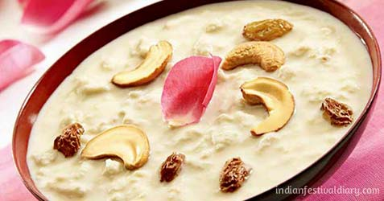
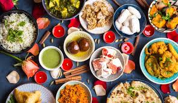

Festivals of Bengal
This page will talk about the various festivals that have been mentioned on this site that take place not only in India but also in Bangladesh.
While there are plenty of them to talk about, right now, we'll talk about two major festivals that are celebrated massively in Bengali Culture.
Durga Pooja
Durga Pooja, also known as Durgotsava, is a festival celebrated in India, specifically in West Bengal, which celebrates the Hindu Goddess Durga. This festival
celebrates Durga's victory over the devil, Mahishasura, as he had chosen to disrespect her as a woman, and disrespected the entire population of women.
Some Foods to Eat during Durga Pooja:
Some foods to eat on Diwali would be: Kheer, also known as Payesh in Bengali, Sandesh, Laddoos, and much more. This festival promotes the celebration of feminism, explaining how people should treat women, as human kind is born from a woman's womb.
 Eid
Eid is a widely celebrated holiday among Muslim Bengalis, whether they reside in India, Bangladesh, or even in the US. There are two Eids in a year, Eid-ul-Fitr
and Eid-al-Adha. The first is celebrated after the holy month of Ramadan, which is when Muslims fast,and is believed to be the month when Prophet Muhammad (PBUH) received the Quran from Allah.
Eid is a celebration of the completion of Ramadan. The second Eid, Eid-al-Adha, is celebrated as the day when Prophet Ibrahim passed the test where he was willing to sacrifice his son
in the name of Allah, only for Allah to intervene and sacrifice a ram instead. During Both Eids, not only do Muslims eat plenty of sweets, they also eat plenty of halal meat
and curries made as well.

All types of sweets, from Kaju Katlis, to Laddoos, to Kheer, to Rashmalai, are eaten during both holidays of Eid. Curries, from vegetarian, to chicken, to varieties of beef curry are all eaten during the
holiday of Eid.